\(\renewcommand{\AA}{\text{Å}}\)
10.6.6. Using LAMMPS on Windows 10 with WSL
written by Richard Berger
It’s always been tricky for us to have LAMMPS users and developers work on Windows. We primarily develop LAMMPS to run on Linux clusters. To teach LAMMPS in workshop settings, we had to redirect Windows users to Linux Virtual Machines such as VirtualBox or Unix-like compilation with Cygwin.
With the latest updates in Windows 10 (Version 2004, Build 19041 or higher), Microsoft has added a new way to work on Linux-based code. The Windows Subsystem for Linux (WSL). With WSL Version 2, you now get a Linux Virtual Machine that transparently integrates into Windows. All you need is to ensure you have the latest Windows updates installed and enable this new feature. Linux VMs are then easily installed using the Microsoft Store.
In this tutorial, I’ll show you how to set up and compile LAMMPS for both serial and MPI usage in WSL2.
Installation
Upgrade to the latest Windows 10
Type “Updates” in Windows Start and select “Check for Updates”.
{kind=link}
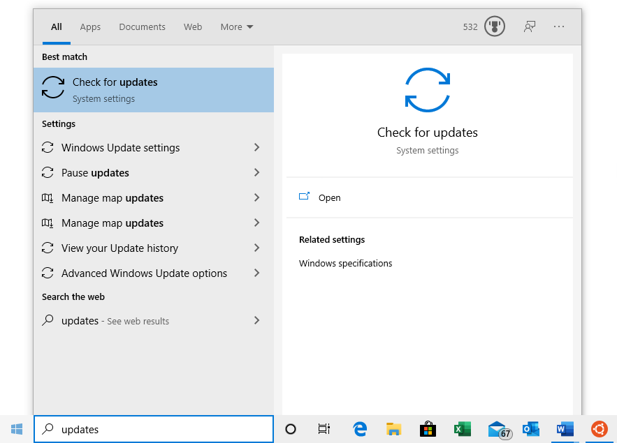
Install all pending updates and reboot your system as many times as necessary. Continue until your Windows installation is updated.
{kind=link}
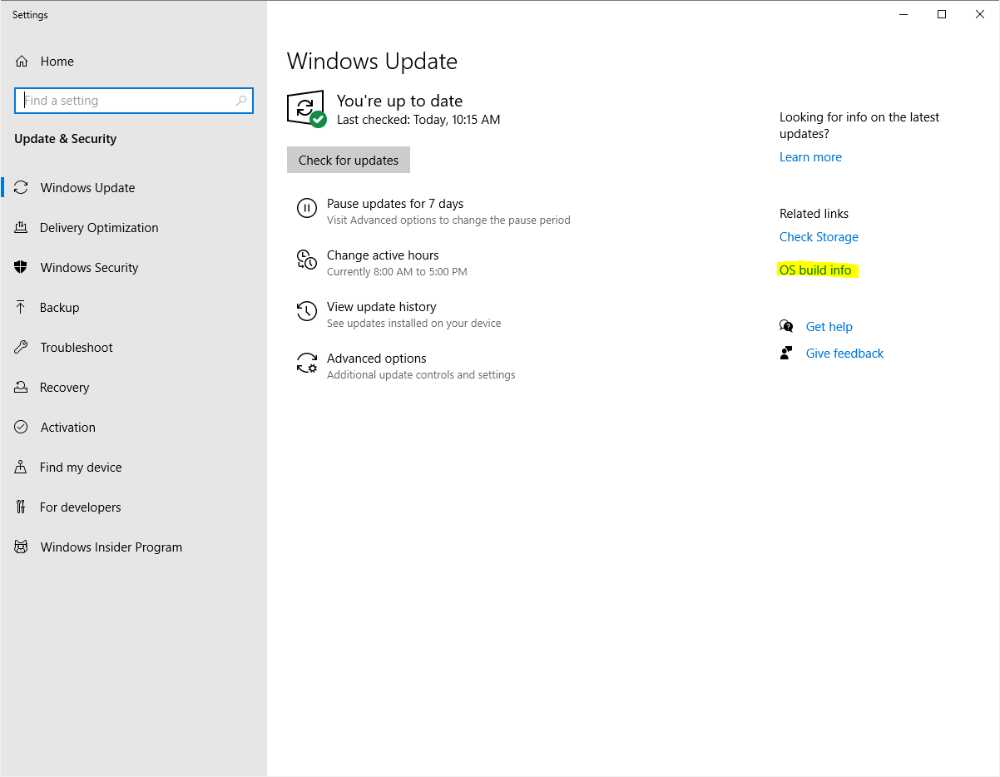
Verify your system has at least version 2004 and build 19041 or later. You can find this information by clicking on “OS build info”.
{kind=link}
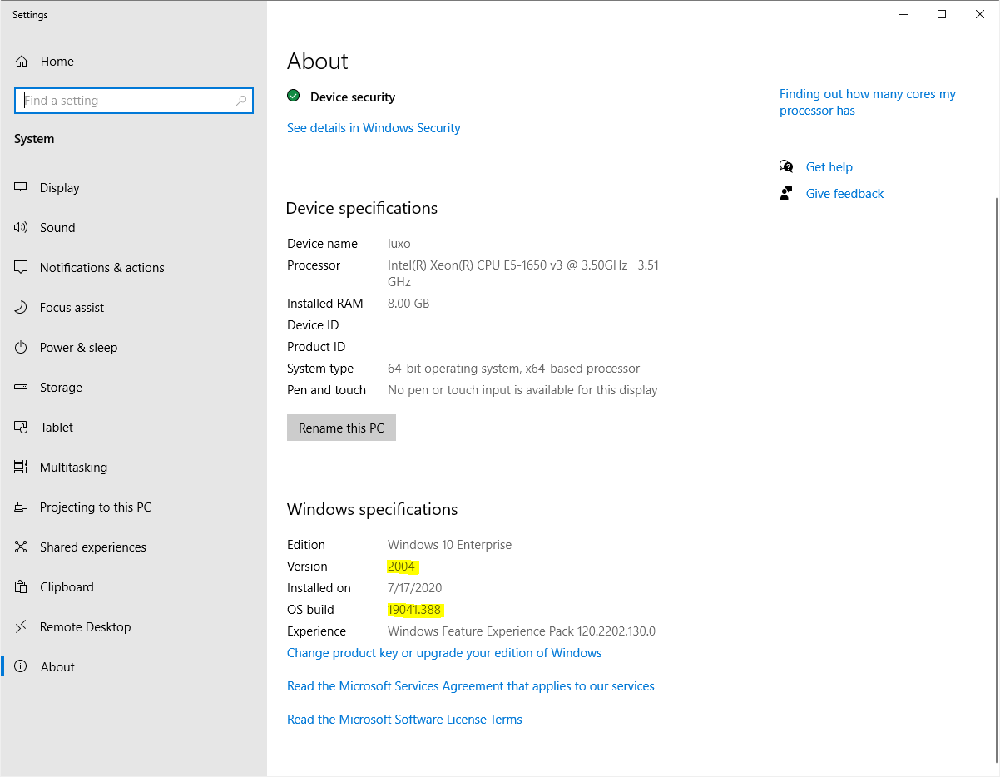
Enable WSL
Next, we must install two additional Windows features to enable WSL support. Open a PowerShell window as an administrator. Type “PowerShell” in Windows Start and select “Run as Administrator”.
{kind=link}
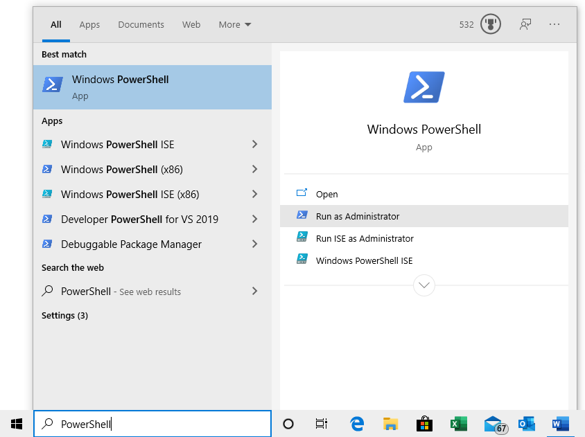
Windows will ask you for administrator access. After you accept a new command line window will appear. Type in the following command to install WSL:
dism.exe /online /enable-feature /featurename:Microsoft-Windows-Subsystem-Linux /all /norestart
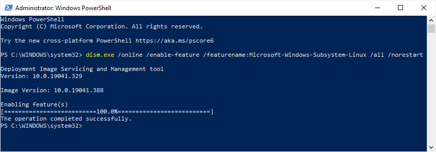
Next, enable the VirtualMachinePlatform feature using the following command:
dism.exe /online /enable-feature /featurename:VirtualMachinePlatform /all /norestart
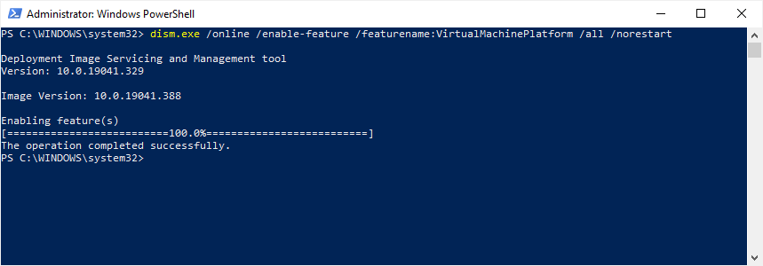
Finally, reboot your system.
Update WSL kernel component
Download and install the WSL Kernel Component Update.
Afterwards, reboot your system.
Set WSL2 as default
Again, open PowerShell as administrator and run the following command:
wsl --set-default-version 2
This command ensures that all future Linux installations will use WSL version 2.
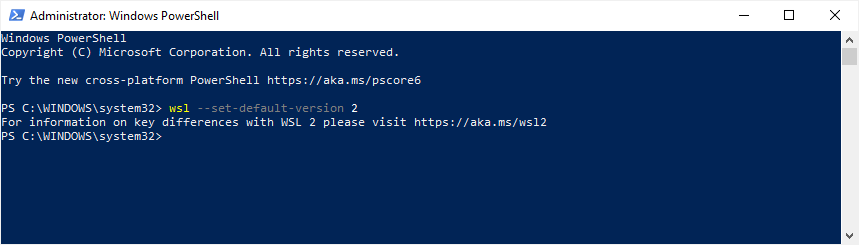
Install a Linux Distribution
Next, we need to install a Linux distribution via the Microsoft Store. Install Ubuntu 20.04 LTS. Once installed, you can launch it like any other application from the Start Menu.
{kind=link}
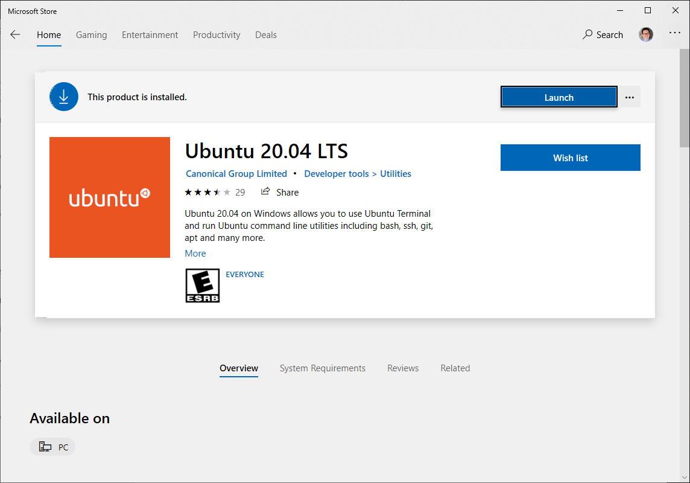
Initial Setup
The first time you launch the Ubuntu Linux console, it will prompt you for a
UNIX username and password. You will need this password to perform sudo
commands later. Once completed, your Linux shell is ready for use. All your
actions and commands will run as the Linux user you specified.
{kind=link}
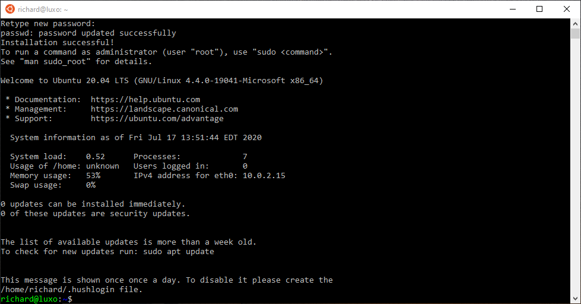
Windows Explorer / WSL integration
Your Linux installation will have its own Linux filesystem, which contains
the Ubuntu files. Your Linux user will have a regular Linux home directory in
/home/<USERNAME>. This directory is different from your Windows User
directory. Windows and Linux filesystems are connected through WSL.
All hard drives in Windows are accessible in the /mnt directory in Linux.
E.g., WSL maps the C hard drive to the /mnt/c directory. That means you
can access your Windows User directory in /mnt/c/Users/<WINDOWS_USERNAME>.
The Windows Explorer can also access the Linux filesystem. To illustrate this
integration, open an Ubuntu console and navigate to a directory of your
choice. To view this location in Windows Explorer, use the explorer.exe .
command (do not forget the final dot!).
{kind=link}
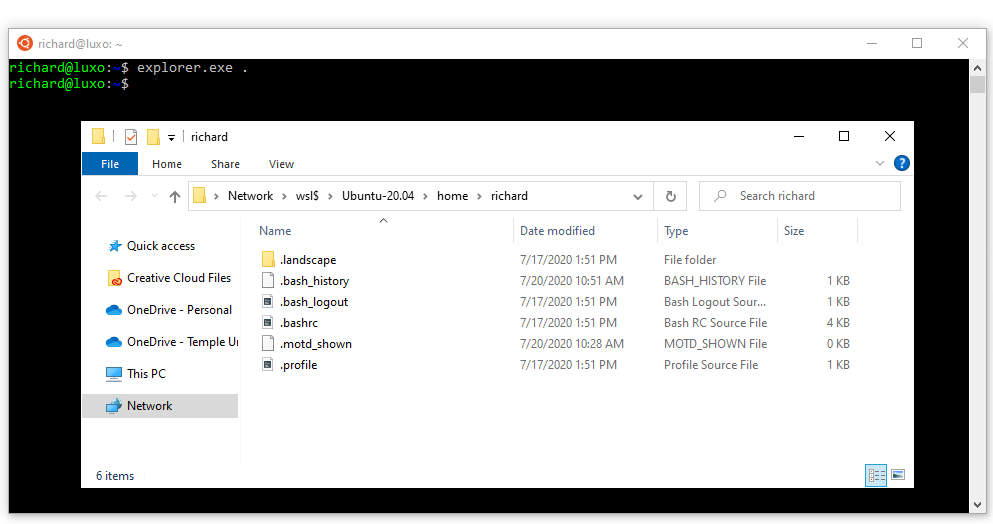
Compiling LAMMPS
You now have a fully functioning Ubuntu installation and can follow most guides to install LAMMPS on a Linux system. Here are some of the essential steps to follow:
Install prerequisite packages
Before we can begin, we need to download the necessary compiler tool chain and
libraries to compile LAMMPS. In our Ubuntu-based Linux installation, we will
use the apt package manager to install additional packages.
First, upgrade all existing packages using apt update and apt upgrade.
sudo apt update
sudo apt upgrade -y
Next, install the following packages with apt install:
sudo apt install -y cmake build-essential ccache gfortran openmpi-bin libopenmpi-dev \
libfftw3-dev libjpeg-dev libpng-dev python3-dev python3-pip \
python3-virtualenv libblas-dev liblapack-dev libhdf5-serial-dev \
hdf5-tools
Download LAMMPS
Obtain a copy of the LAMMPS source code and go into it using the cd command.
Option 1: Download a LAMMPS tarball using wget
wget https://github.com/lammps/lammps/archive/stable_3Mar2020.tar.gz
tar xvzf stable_3Mar2020.tar.gz
cd lammps
Option 2: Download a LAMMPS development version from GitHub
git clone --depth=1 https://github.com/lammps/lammps.git
cd lammps
Configure and Compile LAMMPS with CMake
A beginner-friendly way to compile LAMMPS is to use CMake. Create a build
directory to compile LAMMPS and move into it. This directory will store the
build configuration and any binaries generated during compilation.
mkdir build
cd build
There are countless ways to compile LAMMPS. It is beyond the scope of this tutorial. If you want to find out more about what can be enabled, please consult the extensive documentation.
To compile a minimal version of LAMMPS, we’re going to use a preset. Presets are a way to specify a collection of CMake options using a file.
cmake ../cmake/presets/basic.cmake ../cmake
This command configures the build and generates the necessary Makefiles. To compile the binary, run the make command.
make -j 4
The -j option specifies how many parallel processes will perform the
compilation. This option can significantly speed up compilation times. Use a
number that corresponds to the number of processors in your system.
After the compilation completes successfully, you will have an executable
called lmp in the build directory.
{kind=link}
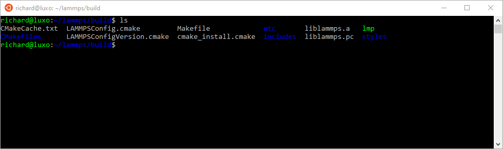
Please take note of the absolute path of your build directory. You will
need to know the location to execute the LAMMPS binary later.
One way of getting the absolute path of the current directory is through the
$PWD variable:
# prints out the current value of the PWD variable
echo $PWD
Let us save this value in a temporary variable LAMMPS_BUILD_DIR for future use:
LAMMPS_BUILD_DIR=$PWD
The full path of the LAMMPS binary then is $LAMMPS_BUILD_DIR/lmp.
Running an example script
Now that we have a LAMMPS binary, we will run a script from the examples folder.
Switch into the examples/melt folder:
cd ../examples/melt
To run this example in serial, use the following command:
$LAMMPS_BUILD_DIR/lmp -in in.melt
To run the same script in parallel using MPI with 4 processes, do the following:
mpirun -np 4 $LAMMPS_BUILD_DIR/lmp -in in.melt
If you run LAMMPS for the first time, the Windows Firewall might prompt you to confirm access. LAMMPS is accessing the network stack to enable parallel computation. Allow the access.
{kind=link}
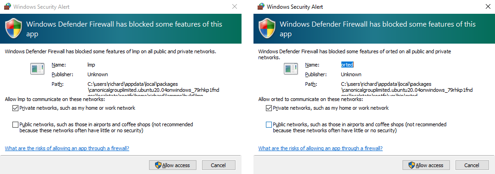
In either serial or MPI case, LAMMPS executes and will output something similar to this:
LAMMPS (30 Jun 2020)
...
...
...
Total # of neighbors = 151513
Ave neighs/atom = 37.878250
Neighbor list builds = 12
Dangerous builds not checked
Total wall time: 0:00:00
Congratulations! You’ve successfully compiled and executed LAMMPS on WSL!
Final steps
It is cumbersome to always specify the path of your LAMMPS binary. You can
avoid this by adding the absolute path of your build directory to your PATH
environment variable.
export PATH=$LAMMPS_BUILD_DIR:$PATH
You can then run LAMMPS input scripts like this:
lmp -in in.melt
or
mpirun -np 4 lmp -in in.melt
Note
The value of this PATH variable will disappear once you close your
console window. To persist this setting edit the $HOME/.bashrc file using your
favorite text editor and add this line:
export PATH=/full/path/to/your/lammps/build:$PATH
Example: If the LAMMPS executable lmp has the following absolute path:
/home/<USERNAME>/lammps/build/lmp
the PATH variable should be:
export PATH=/home/<USERNAME>/lammps/build:$PATH
Once set up, all your Ubuntu consoles will always have access to your lmp
binary without having to specify its location.
Conclusion
I hope this gives you good overview on how to start compiling and running LAMMPS on Windows. WSL makes preparing and running scripts on Windows a much better experience.
If you are completely new to Linux, I highly recommend investing some time in studying Linux online tutorials. E.g., tutorials about Bash Shell and Basic Unix commands (e.g., Linux Journey). Acquiring these skills will make you much more productive in this environment.